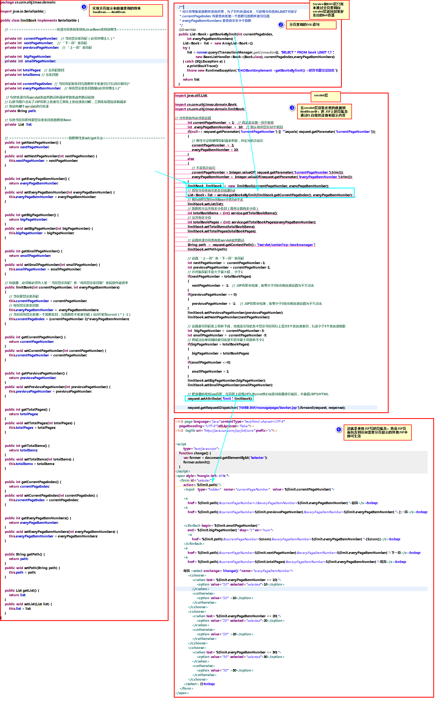

如果通过使用SELECT * FROM database 所返回的结果数据非常多，则这个结果集称为“大数据结果集”，通常情况下为了节省DAO与数据库服务器之间的网络占用以及服务器的内存占用，需要使用分页查询机制将查询结果进行分段截取获取，这便是对大结果集的分页查询。
实现分页查询需要有三个组成部分：1、用来显示和操作分页查询的JSP页码条 2、处理分页查询的servlet---service----DAO三层中的操作逻辑 3、封装分页查询结果及JSP页码条显示信息的特殊JavaBean。
